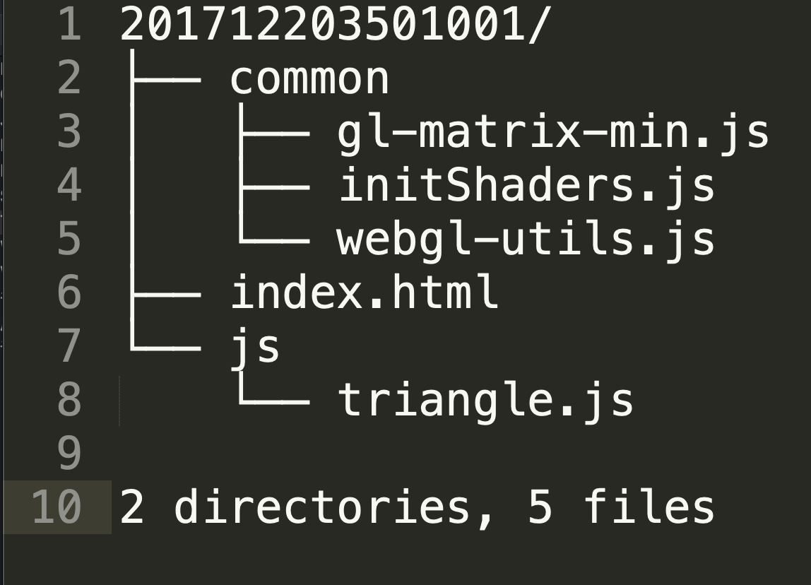

实验的提交时间一般为布置后一周，比如本周二布置的实验作业，提交截止时间为下周一23:59，如有特殊情况会加以说明。
实验提交，一是提交到课程网站指定目录下，二是可以放到自己的个人网站上
自建一个人网站， 能够展示静态网页即可。推荐使用github pages 的个人主页服务，也可采用类似的GitLab 或是国内类似的如码云 提供的个人网页托管服务，当然如果你有能力，也可以选择自己在阿里云或腾讯云或百度云上建站。
以Github Pages为例，搭建过程详见Github建站指南。一小时可以完成，相信我，相信自己
网站至少应该在首页提供明显的每次课程作业的页面链接，建议不超过两层，具体形式不限。
每次实验在截止提交时间之前将压缩包上传到课程网站中对应的实验文件夹下，地址为计算机图形学(WebGL版)
对于在自己网站上展示的结果无要求
提交到课程网站上的的实验提交形式为.zip压缩文件，不接受其它格式压缩文件，凡提交其它格式压缩文件，或解压无效的，一律视作未提交。请在提交到网站之前自行检查核对。
压缩包内部文件目录格式如下：
其中，压缩包的根目录下有index.html文件，用于展示你的实验作业，js目录下放置相关的js文件，所有工具库一律放置在common目录下，用户程序比如triangle.js放在js目录下。压缩包以学号命名。
若一次作业有多个任务，为每个任务分别建立一个html文件，并以任务序号命名，如task1.html, task2.html等，并在index.html中建立每个任务对应html文件的链接。

在第一次作业页面内以超链接形式提供自己的个人网站链接